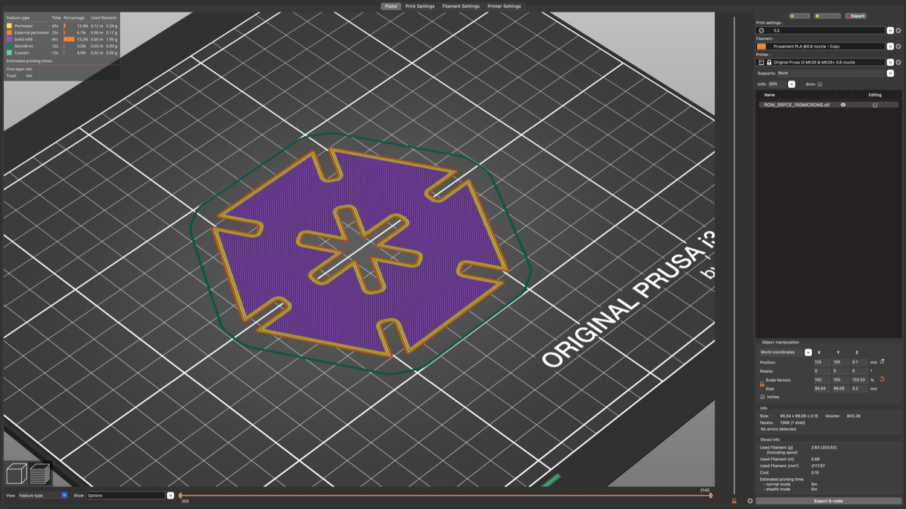
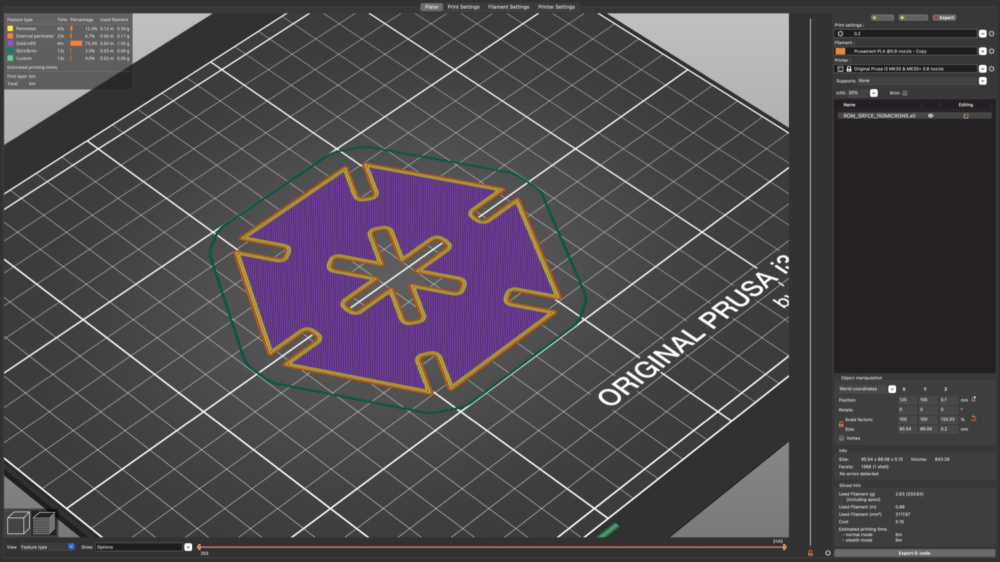
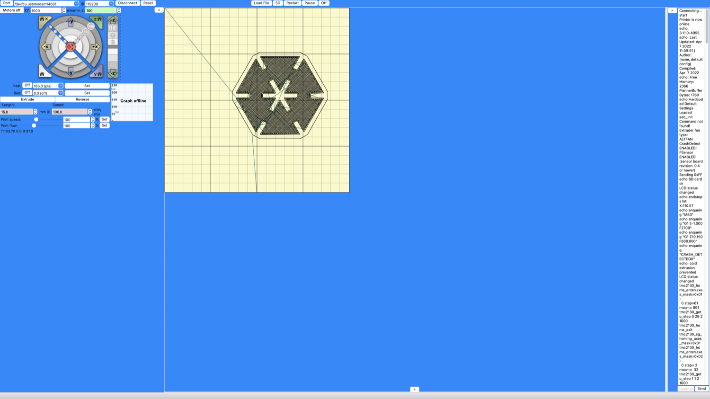

Introduction
The project is to cover a surface with a 3D printed object.
The object have to respect some features :
- Flat surface
- Modular
- Parametric
- Press-fit
- Foldable
The goal is to install the artwork somewhere in a public space
To begin, I was thinking of how to make a modular flat art, but not in a wearable way.
I was mostly into an art that you can put everywhere in the street easily.
-DISCLAIMER-
The 3D Groot is not from me.
You can find it *here*
-DISCLAIMER-
Ressources
To print 3D object we can use 3D printers from the FabLab wich are Prusa printers.
The filament used with the Prusa printer and given by the FabLab is biodegradable, so it's nature friendly.
Week 1
As a beginning we discovered the FabLab.
So how it was working, where it came from and so on.
Project's rules was explained to us and some advice was given for those as me
who never came to the FabLab or used a 3D Printer
Examples were presented by Romain DI VOZZO
*Click here to see the presentation* 

We have the possibility to experiment Pronterface (let you control the 3D Printer directly),
but i will see that later if i have the time for that
After that i was thinking of something usefull than an artwork at first
I wouldn't go to far without any experience in softwares which are Fusion and PrusaSlicer
Week 2
Before printing by ourself, Romain teach us how to use those 3D Printer and also which filament we are able to use.
Then to start, I needed to learn how to use Fusion and PrusaSlicer correctly.
So, after downloading those software. I followed a little *Tutorial* given by romain.
To go from that ↓
To end with that ↓
With a little of pratice i tried different type of shape.
Week 3
After some people that tried to print, we find ut which parameter to enter in Prusa to have a correct result with the 3D Printer.
Because of the filament, we must not heat the bed and use a temperature of 180°C for the buse.
From the Project's Rules and Romain's advice, we knew that we must look for a shape between 0.2mm and 1mm of thiccness.
So i give it a try with my last Prototype which is this one ↓
The result with a thiccness of 0.2mm is that ↓
This first try was kinda small and too thicc.
So I manage to scale it bigger and to make connections better.
Because the idea was to roll the piece on it-self to create a cylinder, I find out that I must redesign my prototype and think further.
Instead of a squared shape I tried to tried to make a rounded parallelogram ↓
Week 4
There is a strike during this week, so i couldn't come at the FabLab, but i tried to explore new design.
But it wasn't really interesting to me, so I cameback to my previous prototype without progress.
Week 5
Because of the strike, I couldn't try my prototype last week.
But as I mention in Week 3, I had a problem of scaling, so i just tried to double it and I reach a thiccness of 0.8mm.
Which seems to be a little too much with my parameters. I had to stop it a little earlier to avoid any problems.
It's still interesting to see as a prototype and to try things. (as follow →)
Then I started to think about a more usefull, flexible and artistic work for next week.
So here are what I obtained ↓ (10min)

Week 6
After a week of thinking, I get inspired by this ↓
So I made some holes in my prototype, which can be other female connection. It can let me explore new ways to assembly.
Then i tried to make multiple pieces at once.
At first with 3 ↓ (30min)
And then with 5 ↓ (50min)
It worked well !
Here is the process :
At first you need to print ↓
In second to collect and check them ↓
Then to assembly them together ↓
And you done. Have fun !